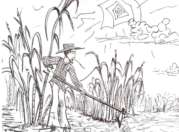
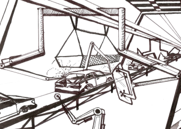
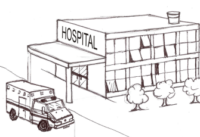
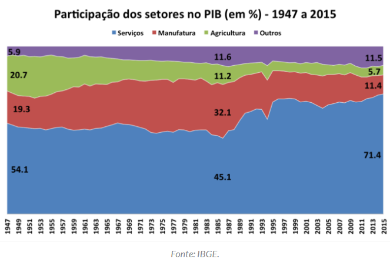
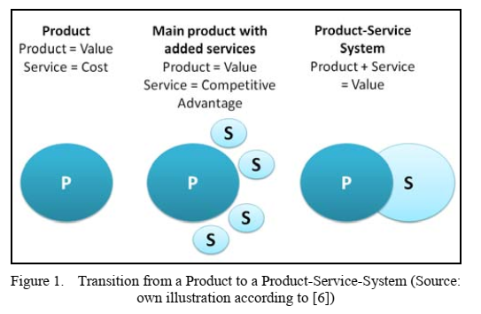
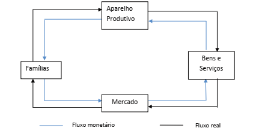
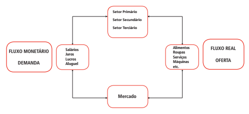

Objetivos da aula
- Definir e identificar os elementos de um sistema econômico.
- Classificar os bens e serviços.
- Diferenciar os setores da atividade econômica.
- Entender o funcionamento de um sistema econômico.
Ideia central
Um sistema econômico é a forma como a sociedade se organiza para utilizar seus recursos produtivos — trabalho, capital e recursos naturais, entre outros — na produção de bens e serviços destinados a atender suas necessidades.
1. O que organiza um sistema econômico?
Do recurso à necessidade
A questão econômica é transformar recursos produtivos em bens e serviços capazes de atender necessidades da sociedade.
Mercado × planejamento central
Economia de mercado
A interação é regulada pela concorrência entre empresas e pelo sistema de preços.
Mais oferta tende a reduzir preços; maior escassez tende a elevá-los.
Economia centralizada
Um órgão central define os rumos da economia e coordena a utilização dos recursos.
2. O que é produzido?
Bens e serviços de consumo
Destinam-se ao atendimento direto das necessidades dos consumidores.
Bens intermediários
Entram no processo produtivo de outros bens e serviços.
Bens de capital
São utilizados para produzir outros bens e serviços.
3. Setores da atividade econômica

Obtenção de recursos
Atividades vinculadas à obtenção direta de recursos naturais.

Transformação
Atividades que transformam matérias-primas em produtos.

Serviços
Atividades de prestação de serviços e apoio às demais atividades econômicas.

O material também apresenta um gráfico histórico da participação dos setores no PIB, útil para perceber como a composição da atividade econômica pode mudar ao longo do tempo.
4. Digitalização e servitização

Produto + serviço
O material associa a digitalização à servitização e apresenta a lógica de Product-Service System (PSS): a oferta deixa de ser apenas um produto e passa a combinar produto e serviço.
Da venda isolada à solução
Essa transição ajuda a perceber que a classificação econômica contemporânea pode envolver combinações entre produção industrial e prestação de serviços.
5. Como o sistema econômico funciona?

Fluxo circular
Famílias, mercado, aparelho produtivo e bens e serviços se conectam de modo contínuo.

Dois fluxos simultâneos
O sistema funciona por dois movimentos relacionados: um de bens, serviços e fatores e outro de pagamentos, salários e rendas.
O que você deve lembrar
O sistema econômico conecta recursos → produção → bens e serviços → mercado → famílias, com regras de coordenação e dois fluxos complementares: real e monetário.
Questões de estudo e avaliação
Classifique uma máquina industrial como bem de consumo, intermediário ou de capital e justifique.
Uma matéria-prima utilizada na fabricação de outro produto pertence a qual categoria? Explique o critério.
Em qual setor você classificaria agricultura, indústria automobilística e atendimento hospitalar?
Por que uma oferta PSS pode dificultar uma separação rígida entre indústria e serviços?
Considere uma família que oferece trabalho a uma empresa e recebe salário. Identifique o que pertence ao fluxo real e ao fluxo monetário.
Explique, em poucas linhas, como recursos produtivos, setores econômicos, bens e fluxos se conectam em um único sistema.
Se um produto se torna mais escasso em uma economia de mercado, qual comportamento de preço é indicado no material?